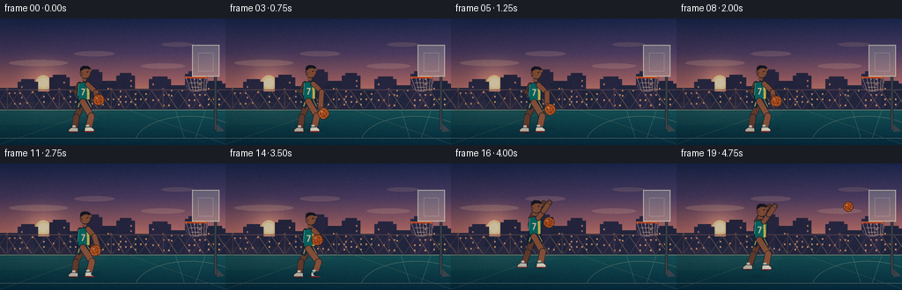
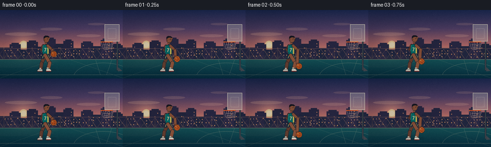
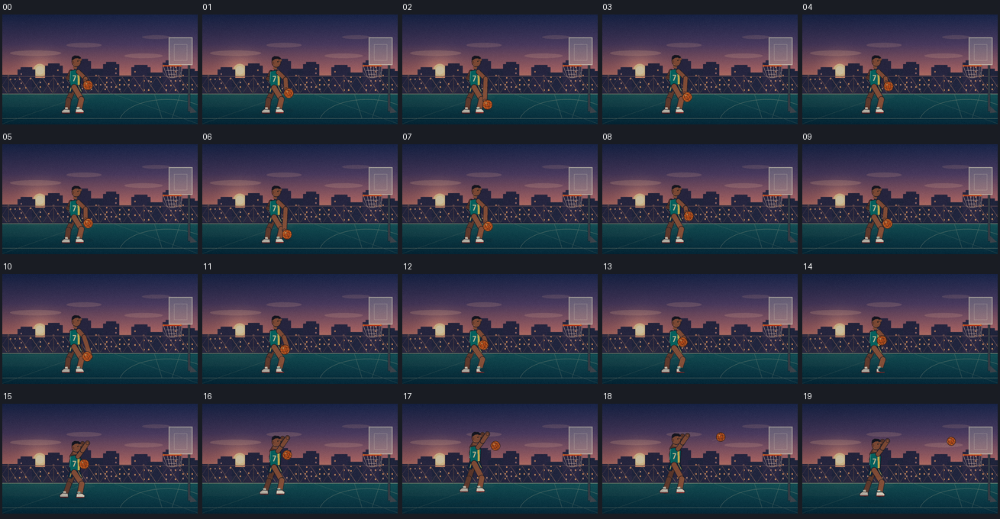
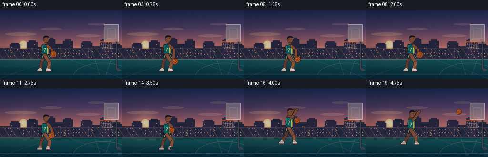

CODING AGENTS AS PIXEL WORLD MODELS
traex/DeepSeek-V4.1-Flash · instance_preservation_0034
点击播放 · 原生 RGB 像素
逐轮保存的候选
回放视频、检查图与代码变化。
每份候选均可单独播放。实际图片检查记录在下方工具轨迹中。
候选 01播放与检查图
点击播放 · 原生 RGB 像素

展开代码变化
--- 上一保存版本
+++ 本次保存版本
@@ -0,0 +1,514 @@
+from pathlib import Path
+import math
+
+import numpy as np
+from PIL import Image, ImageDraw, ImageFont
+
+import artifact_io
+
+
+W, H = 256, 144
+FRAMES = 20
+FPS = 4.0
+S = 4
+
+
+def scaled_point(point):
+ return (int(round(point[0] * S)), int(round(point[1] * S)))
+
+
+def scaled_box(box):
+ return tuple(int(round(value * S)) for value in box)
+
+
+def polygon(draw, points, fill=None, outline=None, width=1):
+ draw.polygon([scaled_point(p) for p in points], fill=fill)
+ if outline is not None:
+ closed = [scaled_point(p) for p in points]
+ closed.append(closed[0])
+ draw.line(closed, fill=outline, width=max(1, int(round(width * S))), joint="curve")
+
+
+def ellipse(draw, box, fill=None, outline=None, width=1):
+ draw.ellipse(
+ scaled_box(box),
+ fill=fill,
+ outline=outline,
+ width=max(1, int(round(width * S))) if outline is not None else 0,
+ )
+
+
+def line(draw, points, fill, width=1, joint="curve"):
+ draw.line(
+ [scaled_point(p) for p in points],
+ fill=fill,
+ width=max(1, int(round(width * S))),
+ joint=joint,
+ )
+
+
+def capsule(draw, a, b, width, fill, outline=None):
+ if outline is not None:
+ line(draw, [a, b], outline, width + 1.25)
+ radius = (width + 1.25) * 0.5
+ ellipse(draw, (a[0] - radius, a[1] - radius, a[0] + radius, a[1] + radius), outline)
+ ellipse(draw, (b[0] - radius, b[1] - radius, b[0] + radius, b[1] + radius), outline)
+ line(draw, [a, b], fill, width)
+ radius = width * 0.5
+ ellipse(draw, (a[0] - radius, a[1] - radius, a[0] + radius, a[1] + radius), fill)
+ ellipse(draw, (b[0] - radius, b[1] - radius, b[0] + radius, b[1] + radius), fill)
+
+
+def limb(draw, points, width, fill, outline):
+ for start, end in zip(points[:-1], points[1:]):
+ capsule(draw, start, end, width, fill, outline)
+ for point in points[1:-1]:
+ ellipse(
+ draw,
+ (point[0] - width * 0.44, point[1] - width * 0.44,
+ point[0] + width * 0.44, point[1] + width * 0.44),
+ fill,
+ )
+
+
+def mix(a, b, t):
+ return tuple(int(round(a[i] * (1.0 - t) + b[i] * t)) for i in range(3))
+
+
+def make_background():
+ yy, xx = np.mgrid[0:H * S, 0:W * S]
+ y = yy.astype(np.float32) / S
+ x = xx.astype(np.float32) / S
+ image = np.zeros((H * S, W * S, 3), dtype=np.float32)
+
+ sky_stops = [
+ (0.0, np.array([34, 45, 86], dtype=np.float32)),
+ (0.38, np.array([91, 70, 111], dtype=np.float32)),
+ (0.72, np.array([188, 112, 113], dtype=np.float32)),
+ (1.0, np.array([247, 174, 119], dtype=np.float32)),
+ ]
+ horizon = 102.0
+ for row in range(H * S):
+ logical_y = row / S
+ if logical_y <= horizon:
+ t = max(0.0, min(1.0, logical_y / horizon))
+ for (t0, c0), (t1, c1) in zip(sky_stops[:-1], sky_stops[1:]):
+ if t <= t1:
+ local = (t - t0) / max(1e-6, t1 - t0)
+ image[row, :, :] = c0 * (1.0 - local) + c1 * local
+ break
+ else:
+ t = min(1.0, (logical_y - horizon) / (H - horizon))
+ top = np.array([26, 91, 94], dtype=np.float32)
+ bottom = np.array([10, 44, 59], dtype=np.float32)
+ image[row, :, :] = top * (1.0 - t) + bottom * t
+
+ sun_x, sun_y = 49.0, 73.0
+ dist2 = (x - sun_x) ** 2 + (y - sun_y) ** 2
+ glow = np.exp(-dist2 / 470.0)
+ for channel, strength in enumerate((65, 48, 23)):
+ image[:, :, channel] += glow * strength
+
+ image = np.clip(image, 0, 255).astype(np.uint8)
+ base = Image.fromarray(image).convert("RGBA")
+ overlay = Image.new("RGBA", base.size, (0, 0, 0, 0))
+ draw = ImageDraw.Draw(overlay)
+
+ # Warm sun and layered haze.
+ ellipse(draw, (sun_x - 8.5, sun_y - 8.5, sun_x + 8.5, sun_y + 8.5), (255, 230, 172, 235))
+ ellipse(draw, (sun_x - 5.5, sun_y - 5.5, sun_x + 5.5, sun_y + 5.5), (255, 245, 208, 245))
+ for cloud in [
+ (10, 47, 77, 54, 70),
+ (84, 37, 130, 43, 54),
+ (160, 51, 210, 57, 58),
+ (183, 27, 220, 32, 40),
+ ]:
+ ellipse(draw, cloud[:4], (248, 190, 169, cloud[4]))
+
+ # A compact city skyline gives the outdoor court a clear sense of place.
+ buildings = [
+ (0, 79, 25, 104, (47, 46, 73, 255)),
+ (20, 72, 43, 104, (52, 48, 76, 255)),
+ (39, 83, 61, 104, (42, 45, 70, 255)),
+ (56, 67, 79, 104, (48, 44, 70, 255)),
+ (75, 77, 97, 104, (41, 43, 68, 255)),
+ (94, 61, 116, 104, (51, 45, 72, 255)),
+ (112, 74, 137, 104, (42, 43, 67, 255)),
+ (132, 65, 153, 104, (46, 43, 69, 255)),
+ (149, 80, 172, 104, (39, 42, 65, 255)),
+ (169, 69, 194, 104, (48, 44, 71, 255)),
+ (190, 76, 213, 104, (41, 43, 67, 255)),
+ (210, 63, 235, 104, (50, 45, 72, 255)),
+ (232, 74, 256, 104, (39, 41, 64, 255)),
+ ]
+ for left, top, right, bottom, color in buildings:
+ draw.rectangle(scaled_box((left, top, right, bottom)), fill=color)
+ if top < 75:
+ draw.rectangle(scaled_box((left + 4, top - 3, right - 4, top)), fill=color)
+
+ window_rng = np.random.default_rng(13)
+ for left, top, right, bottom, _ in buildings:
+ for wx in range(left + 4, right - 2, 6):
+ for wy in range(top + 5, min(bottom - 2, 99), 6):
+ if window_rng.random() < 0.42:
+ warm = (235, 166, 91, 130) if window_rng.random() < 0.7 else (138, 143, 165, 75)
+ draw.rectangle(scaled_box((wx, wy, wx + 1.4, wy + 1.7)), fill=warm)
+
+ # Chain-link fence catches the last light behind the court.
+ fence_top = 82
+ for x0 in range(-8, 268, 15):
+ line(draw, [(x0, fence_top), (x0 + 15, 104)], (45, 48, 67, 105), 0.45)
+ line(draw, [(x0, 104), (x0 + 15, fence_top)], (45, 48, 67, 80), 0.35)
+ for post_x in (8, 67, 126, 185, 244):
+ line(draw, [(post_x, 80), (post_x, 105)], (37, 40, 58, 190), 1.0)
+ ellipse(draw, (post_x - 1.2, 79, post_x + 1.2, 81.4), (91, 72, 79, 210))
+ line(draw, [(0, 81), (256, 81)], (49, 50, 69, 145), 0.7)
+
+ # Court markings in perspective.
+ line(draw, [(0, 104), (256, 104)], (225, 207, 163, 150), 0.8)
+ line(draw, [(0, 136), (256, 136)], (240, 224, 181, 115), 0.55)
+ line(draw, [(0, 143), (111, 104)], (226, 214, 176, 68), 0.55)
+ line(draw, [(256, 143), (145, 104)], (226, 214, 176, 68), 0.55)
+ line(draw, [(199, 104), (209, 136)], (234, 217, 178, 82), 0.6)
+ line(draw, [(233, 104), (222, 136)], (234, 217, 178, 82), 0.6)
+ draw.arc(
+ scaled_box((153, 111, 279, 173)),
+ 191,
+ 349,
+ fill=(235, 217, 178, 100),
+ width=max(1, int(0.7 * S)),
+ )
+
+ # Fine asphalt speckle and reflected warm light.
+ speck_rng = np.random.default_rng(41)
+ for _ in range(230):
+ px = int(speck_rng.integers(0, W))
+ py = int(speck_rng.integers(104, H))
+ alpha = int(speck_rng.integers(14, 36))
+ tone = (197, 213, 195, alpha) if speck_rng.random() < 0.55 else (13, 37, 46, alpha)
+ draw.point(scaled_point((px, py)), fill=tone)
+
+ # Backboard, pole, rim, and net sit behind the player.
+ draw.rectangle(scaled_box((243, 54, 246, 127)), fill=(67, 73, 79, 255))
+ draw.rectangle(scaled_box((243, 54, 246, 127)), outline=(31, 34, 42, 255), width=max(1, int(0.6 * S)))
+ draw.polygon(
+ [scaled_point(p) for p in [(246, 120), (255, 128), (246, 129)]],
+ fill=(67, 73, 79, 255),
+ )
+ draw.rectangle(scaled_box((218, 30, 249, 66)), fill=(224, 232, 222, 74), outline=(237, 236, 214, 210),
+ width=max(1, int(1.1 * S)))
+ draw.rectangle(scaled_box((225, 39, 242, 60)), outline=(239, 238, 219, 150),
+ width=max(1, int(0.65 * S)))
+ line(draw, [(211, 67), (234, 67)], (208, 67, 35, 255), 2.0)
+ line(draw, [(211, 66.2), (234, 66.2)], (255, 150, 54, 220), 0.55)
+ ellipse(draw, (210.3, 65.8, 212.1, 68.4), (241, 102, 35, 255))
+ ellipse(draw, (232.9, 65.8, 234.7, 68.4), (241, 102, 35, 255))
+ net_color = (234, 231, 212, 160)
+ for start_x, end_x in [(211, 216), (216, 219), (220, 222), (224, 225), (228, 228.5), (232, 231), (234, 234)]:
+ line(draw, [(start_x, 68), (end_x, 82)], net_color, 0.45)
+ for net_y, half_width in [(73, 7.8), (78, 5.3), (82, 3.0)]:
+ line(draw, [(222.5 - half_width, net_y), (222.5 + half_width, net_y)], net_color, 0.45)
+ draw.arc(scaled_box((211.5, 67.5, 233.5, 83)), 0, 180, fill=net_color, width=max(1, int(0.45 * S)))
+
+ base = Image.alpha_composite(base, overlay)
+ return base
+
+
+def draw_shadow(draw, cx, ground_y, width, strength=1.0):
+ colors = [
+ (24, 54, 60, int(70 * strength)),
+ (21, 50, 57, int(82 * strength)),
+ (18, 45, 54, int(92 * strength)),
+ ]
+ for index, color in enumerate(colors):
+ w = width * (1.0 - index * 0.22)
+ h = 5.5 * (1.0 - index * 0.16)
+ ellipse(draw, (cx - w / 2, ground_y - h / 2, cx + w / 2, ground_y + h / 2), color)
+
+
+def draw_shoe(draw, ankle, toe_direction, main=(236, 233, 217), accent=(185, 49, 44)):
+ x, y = ankle
+ if toe_direction >= 0:
+ points = [
+ (x - 4.1, y - 2.0), (x + 4.0, y - 2.5), (x + 7.0, y + 0.2),
+ (x + 6.4, y + 2.8), (x - 4.2, y + 2.8),
+ ]
+ sole = [(x - 4.2, y + 2.1), (x + 6.5, y + 2.1), (x + 6.4, y + 3.2), (x - 4.2, y + 3.2)]
+ else:
+ points = [
+ (x + 4.1, y - 2.0), (x - 4.0, y - 2.5), (x - 7.0, y + 0.2),
+ (x - 6.4, y + 2.8), (x + 4.2, y + 2.8),
+ ]
+ sole = [(x - 6.5, y + 2.1), (x + 4.2, y + 2.1), (x + 4.2, y + 3.2), (x - 6.5, y + 3.2)]
+ polygon(draw, points, main, (39, 37, 43), 0.7)
+ polygon(draw, sole, accent, (39, 37, 43), 0.35)
+ line(draw, [(x - 2.7, y - 0.7), (x + 3.3, y - 0.8)], (255, 255, 245), 0.45)
+
+
+def draw_basketball(draw, center, radius, angle):
+ cx, cy = center
+ ellipse(draw, (cx - radius, cy - radius, cx + radius, cy + radius), (218, 91, 29), (82, 42, 28), 0.75)
+ ellipse(draw, (cx - radius + 0.9, cy - radius + 0.8, cx + radius - 1.0, cy + radius - 1.0),
+ None, (247, 139, 55), 0.45)
+
+ # Rotating elliptical seams read as a turning basketball at this scale.
+ for tilt in (angle, angle + math.pi * 0.5):
+ pts = []
+ for step in range(48):
+ t = 2.0 * math.pi * step / 48
+ ex = math.cos(t) * radius * 0.92
+ ey = math.sin(t) * radius * 0.42
+ rx = ex * math.cos(tilt) - ey * math.sin(tilt)
+ ry = ex * math.sin(tilt) + ey * math.cos(tilt)
+ pts.append((cx + rx, cy + ry))
+ line(draw, pts, (105, 51, 31), 0.55)
+
+ curve = []
+ for step in range(25):
+ t = -math.pi / 2 + math.pi * step / 24
+ x = cx + math.sin(t) * radius * 0.48 + math.cos(angle) * radius * 0.08
+ y = cy + math.sin(t) * radius * 0.92
+ curve.append((x, y))
+ line(draw, curve, (108, 53, 31), 0.55)
+ ellipse(draw, (cx - radius * 0.48, cy - radius * 0.5,
+ cx - radius * 0.12, cy - radius * 0.16), (250, 169, 89, 210))
+
+
+def draw_player(draw, frame_index):
+ dribble_ball_y = [92.5, 103.0, 118.0, 108.0, 94.0, 103.5, 118.0, 107.5, 94.0, 104.0]
+ if frame_index < 10:
+ phase = "dribble"
+ jump = 0.0
+ crouch = 0.0
+ bob = 0.8 * math.sin(frame_index * 1.45)
+ elif frame_index < 15:
+ phase = "gather"
+ jump = 0.0
+ crouch = [0.15, 0.40, 0.70, 0.90, 1.0][frame_index - 10]
+ bob = crouch * 1.8
+ else:
+ phase = "shot"
+ jump = [5.0, 12.0, 17.0, 15.0, 8.0][frame_index - 15]
+ crouch = 0.0
+ bob = 0.0
+
+ hip = (94.0, 95.0 + bob - jump)
+ shoulder = (94.5, 73.0 + bob - jump)
+ head = (97.5, 62.0 + bob - jump)
+
+ # Long evening shadow.
+ draw_shadow(draw, 91.0, 128.3, 35.0 - jump * 0.35, 0.8 if jump else 1.0)
+ line(draw, [(89, 128), (65, 132)], (22, 52, 58, 46), 2.5)
+
+ # Legs and shorts are posed separately so the gather and jump remain readable.
+ if phase != "shot":
+ knee_front = (103.5 + crouch * 2.0, 111.0 + crouch * 1.0)
+ ankle_front = (100.0 + crouch * 1.2, 126.0)
+ knee_back = (86.5 - crouch * 1.0, 112.0)
+ ankle_back = (84.5 - crouch * 0.5, 126.4)
+ else:
+ knee_front = (104.0, 108.0 - jump * 0.65)
+ ankle_front = (101.0, 123.0 - jump * 0.62)
+ knee_back = (87.0, 108.5 - jump * 0.62)
+ ankle_back = (82.0, 122.5 - jump * 0.58)
+
+ far_skin = (111, 65, 48)
+ near_skin = (156, 91, 63)
+ outline = (40, 34, 40)
+
+ limb(draw, [hip, knee_back, ankle_back], 6.2, far_skin, outline)
+ line(draw, [(ankle_back[0] - 1, ankle_back[1] - 5), (ankle_back[0], ankle_back[1] + 0.5)],
+ (224, 218, 203), 3.5)
+ draw_shoe(draw, ankle_back, -1, (206, 202, 191), (136, 42, 40))
+
+ # Far arm.
+ if phase == "dribble":
+ far_arm = [(90.0, 75.0 + bob), (86.0, 83.0 + bob), (94.0, 87.0 + bob)]
+ elif phase == "gather":
+ ball_x, ball_y = gather_ball(frame_index)
+ far_arm = [(91.0, 75.0 + bob), (97.0, 82.0 + bob), (ball_x - 4.5, ball_y)]
+ else:
+ far_arm = [(91.0, 74.0 - jump), (96.0, 65.0 - jump), (105.0, 57.0 - jump)]
+ limb(draw, far_arm, 4.8, far_skin, outline)
+
+ # Shorts.
+ polygon(
+ draw,
+ [(88.5, 91.0 + bob - jump), (101.5, 91.0 + bob - jump),
+ (105.0, 101.5 + bob - jump), (96.0, 103.0 + bob - jump),
+ (93.5, 99.0 + bob - jump), (90.0, 103.0 + bob - jump),
+ (85.2, 101.0 + bob - jump)],
+ (22, 48, 74), outline, 0.85,
+ )
+ line(draw, [(91.0, 92.5 + bob - jump), (88.6, 101.0 + bob - jump)], (238, 198, 91), 1.0)
+ line(draw, [(99.0, 92.5 + bob - jump), (103.5, 101.0 + bob - jump)], (238, 198, 91), 0.65)
+
+ # Torso and jersey.
+ torso = [
+ (90.0, 73.0 + bob - jump), (99.5, 71.7 + bob - jump),
+ (103.0, 77.0 + bob - jump), (102.0, 92.5 + bob - jump),
+ (89.0, 93.5 + bob - jump), (87.8, 81.0 + bob - jump),
+ ]
+ polygon(draw, torso, (9, 119, 113), outline, 0.9)
+ polygon(
+ draw,
+ [(98.6, 72.5 + bob - jump), (101.1, 74.8 + bob - jump),
+ (101.2, 92.0 + bob - jump), (98.8, 92.3 + bob - jump)],
+ (241, 202, 92), None,
+ )
+ line(draw, [(89.5, 74.0 + bob - jump), (88.3, 88.0 + bob - jump)], (74, 188, 171), 0.7)
+ # Small jersey number.
+ line(draw, [(92.2, 80.2 + bob - jump), (96.0, 80.2 + bob - jump), (93.2, 87.2 + bob - jump)],
+ (244, 226, 180), 1.25)
+
+ # Neck and head.
+ line(draw, [(94.8, 71.0 + bob - jump), (96.1, 67.0 + bob - jump)], near_skin, 5.0)
+ ellipse(draw, (90.8, 55.0 + bob - jump, 103.0, 68.4 + bob - jump), near_skin, outline, 0.75)
+ polygon(
+ draw,
+ [(99.7, 56.0 + bob - jump), (104.6, 58.5 + bob - jump),
+ (103.3, 61.0 + bob - jump), (100.1, 60.1 + bob - jump)],
+ near_skin, outline, 0.35,
+ )
+ # Hair cap and close-cropped edge.
+ polygon(
+ draw,
+ [(90.8, 59.2 + bob - jump), (91.3, 55.8 + bob - jump),
+ (94.2, 53.8 + bob - jump), (99.8, 54.1 + bob - jump),
+ (103.0, 56.5 + bob - jump), (101.7, 58.0 + bob - jump),
+ (98.8, 57.0 + bob - jump), (95.3, 57.2 + bob - jump),
+ (92.1, 59.7 + bob - jump)],
+ (31, 27, 34), outline, 0.35,
+ )
+ ellipse(draw, (91.0, 60.7 + bob - jump, 94.0, 64.4 + bob - jump), (129, 72, 53))
+ ellipse(draw, (98.2, 60.3 + bob - jump, 99.5, 61.6 + bob - jump), (31, 27, 31))
+ line(draw, [(100.1, 64.1 + bob - jump), (102.0, 64.5 + bob - jump)], (89, 45, 39), 0.45)
+ line(draw, [(92.0, 66.1 + bob - jump), (95.1, 66.4 + bob - jump)], (207, 137, 95), 0.45)
+
+ # Near leg.
+ limb(draw, [hip, knee_front, ankle_front], 6.6, near_skin, outline)
+ line(draw, [(ankle_front[0] - 1, ankle_front[1] - 5), (ankle_front[0], ankle_front[1] + 0.4)],
+ (244, 237, 218), 3.8)
+ line(draw, [(ankle_front[0] - 2.8, ankle_front[1] - 3.3), (ankle_front[0] + 2.5, ankle_front[1] - 3.4)],
+ (24, 107, 113), 0.8)
+ draw_shoe(draw, ankle_front, 1)
+
+ # Near shooting/dribbling arm.
+ if phase == "dribble":
+ ball_x, ball_y = 112.0 + 1.1 * math.sin(frame_index * 1.8), dribble_ball_y[frame_index]
+ near_arm = [(99.5, 75.0 + bob), (109.0, 84.0 + bob), (ball_x - 3.4, ball_y - 5.8)]
+ elif phase == "gather":
+ ball_x, ball_y = gather_ball(frame_index)
+ near_arm = [(100.0, 74.0 + bob), (107.0, 82.0 + bob), (ball_x + 4.3, ball_y + 0.2)]
+ else:
+ near_arm = [(99.0, 74.0 - jump), (105.0, 66.0 - jump), (111.5, 56.5 - jump)]
+ limb(draw, near_arm, 5.2, near_skin, outline)
+ ellipse(draw, (near_arm[-1][0] - 2.0, near_arm[-1][1] - 1.8,
+ near_arm[-1][0] + 2.1, near_arm[-1][1] + 2.2), near_skin, outline, 0.4)
+
+ return phase
+
+
+def gather_ball(frame_index):
+ return {
+ 10: (111.0, 108.0),
+ 11: (108.0, 99.0),
+ 12: (106.0, 93.0),
+ 13: (105.0, 89.0),
+ 14: (104.0, 87.0),
+ }[frame_index]
+
+
+def ball_state(frame_index):
+ dribble_y = [92.5, 103.0, 118.0, 108.0, 94.0, 103.5, 118.0, 107.5, 94.0, 104.0]
+ if frame_index < 10:
+ return (112.0 + 1.1 * math.sin(frame_index * 1.8), dribble_y[frame_index], 6.4, frame_index * 0.8)
+ if frame_index < 15:
+ x, y = gather_ball(frame_index)
+ return (x, y, 6.4, frame_index * 0.55)
+ shot = {
+ 15: (107.0, 79.0, 6.4, 6.3),
+ 16: (111.0, 67.0, 6.3, 6.8),
+ 17: (122.0, 55.0, 6.2, 7.3),
+ 18: (155.0, 43.5, 5.9, 7.8),
+ 19: (195.0, 49.0, 5.8, 8.4),
+ }
+ return shot[frame_index]
+
+
+def draw_ball_and_shadow(draw, frame_index):
+ cx, cy, radius, angle = ball_state(frame_index)
+ height = max(0.0, 124.0 - cy)
+ width = radius * (2.1 - min(height / 92.0, 0.75))
+ shadow_strength = max(0.2, 0.9 - height / 115.0)
+ draw_shadow(draw, cx + 1.0, 125.5, width, shadow_strength)
+
+ # A couple of restrained speed marks make the release arc legible.
+ if 17 <= frame_index <= 19:
+ alpha = [115, 85, 58][frame_index - 17]
+ line(draw, [(cx - 11, cy + 5), (cx - 5, cy + 2)], (255, 222, 177, alpha), 0.55)
+ line(draw, [(cx - 10, cy + 9), (cx - 4, cy + 6)], (255, 222, 177, alpha // 2), 0.45)
+ draw_basketball(draw, (cx, cy), radius, angle)
+
+
+def add_atmosphere(image, frame_index):
+ image = image.convert("RGBA")
+ overlay = Image.new("RGBA", image.size, (0, 0, 0, 0))
+ draw = ImageDraw.Draw(overlay)
+
+ # Warm rim light entering from the left, plus a light haze near the floor.
+ line(draw, [(0, 118), (113, 104)], (255, 209, 150, 22), 1.1)
+ line(draw, [(0, 121), (105, 105)], (255, 216, 167, 13), 0.6)
+ for index, y in enumerate((100, 106, 113)):
+ ellipse(draw, (-45, y - 5, 130 - index * 9, y + 8), (255, 213, 171, 8))
+
+ # Tiny drifting dust motes in the sunbeam.
+ rng = np.random.default_rng(100 + frame_index)
+ for _ in range(15):
+ px = int(rng.integers(2, 84))
+ py = int(rng.integers(31, 105))
+ alpha = int(rng.integers(18, 50))
+ draw.point(scaled_point((px, py)), fill=(255, 225, 175, alpha))
+ return Image.alpha_composite(image, overlay)
+
+
+def color_grade(image, frame_index):
+ array = np.asarray(image.convert("RGB"), dtype=np.float32)
+ yy, xx = np.mgrid[0:array.shape[0], 0:array.shape[1]]
+ nx = (xx / (W * S) - 0.5) * 2.0
+ ny = (yy / (H * S) - 0.5) * 2.0
+ vignette = np.clip(1.0 - 0.17 * (nx * nx + ny * ny * 0.85), 0.72, 1.0)
+ array *= vignette[:, :, None]
+
+ # Gentle teal shadows / warm highlights.
+ luma = array.mean(axis=2, keepdims=True) / 255.0
+ warm = np.array([7.0, 2.0, -3.0], dtype=np.float32)
+ cool = np.array([-4.0, 2.0, 7.0], dtype=np.float32)
+ array += (luma - 0.45) * warm + (0.48 - luma) * cool
+ rng = np.random.default_rng(900 + frame_index)
+ grain = rng.normal(0.0, 1.35, (array.shape[0], array.shape[1], 1)).astype(np.float32)
+ array += grain
+ return Image.fromarray(np.clip(array, 0, 255).astype(np.uint8), "RGB")
+
+
+def render_frame(frame_index):
+ background = make_background()
+ layer = Image.new("RGBA", background.size, (0, 0, 0, 0))
+ draw = ImageDraw.Draw(layer)
+ draw_player(draw, frame_index)
+ draw_ball_and_shadow(draw, frame_index)
+ composed = Image.alpha_composite(background, layer)
+ composed = add_atmosphere(composed, frame_index)
+ composed = composed.resize((W, H), Image.Resampling.LANCZOS)
+ return np.asarray(color_grade(composed, frame_index), dtype=np.uint8)
+
+
+def main():
+ case_dir = Path(__file__).resolve().parent
+ frames = np.stack([render_frame(i) for i in range(FRAMES)])
+ artifact_io.save(frames, case_dir)
+ print(f"Saved {FRAMES} frames to {case_dir}")
+
+
+if __name__ == "__main__":
+ main()
候选 02播放与检查图
点击播放 · 原生 RGB 像素


展开代码变化
--- 上一保存版本
+++ 本次保存版本
@@ -301,16 +301,17 @@
line(draw, [(89, 128), (65, 132)], (22, 52, 58, 46), 2.5)
# Legs and shorts are posed separately so the gather and jump remain readable.
- if phase != "shot":
+ if phase == "shot":
+ # A tucked, compact airborne silhouette avoids the stiff straight-leg pose.
+ knee_front = (104.5, 107.0 - jump * 0.56)
+ ankle_front = (105.5, 119.0 - jump * 0.48)
+ knee_back = (85.8, 108.0 - jump * 0.53)
+ ankle_back = (79.5, 118.5 - jump * 0.45)
+ else:
knee_front = (103.5 + crouch * 2.0, 111.0 + crouch * 1.0)
ankle_front = (100.0 + crouch * 1.2, 126.0)
knee_back = (86.5 - crouch * 1.0, 112.0)
ankle_back = (84.5 - crouch * 0.5, 126.4)
- else:
- knee_front = (104.0, 108.0 - jump * 0.65)
- ankle_front = (101.0, 123.0 - jump * 0.62)
- knee_back = (87.0, 108.5 - jump * 0.62)
- ankle_back = (82.0, 122.5 - jump * 0.58)
far_skin = (111, 65, 48)
near_skin = (156, 91, 63)
@@ -488,7 +489,7 @@
rng = np.random.default_rng(900 + frame_index)
grain = rng.normal(0.0, 1.35, (array.shape[0], array.shape[1], 1)).astype(np.float32)
array += grain
- return Image.fromarray(np.clip(array, 0, 255).astype(np.uint8), "RGB")
+ return Image.fromarray(np.clip(array, 0, 255).astype(np.uint8))
def render_frame(frame_index):
可观测工具轨迹
实际执行的命令与返回图片。
命令 1exit 0
/bin/bash -c "pwd && rg --files -g 'prompt.txt' -g 'GENERATION_RULES.md' -g 'task_spec.json' -g '"'!*.mp4'"' -g '"'!*.png'"' -g '"'!*.jpg'"'"
命令 2exit 0
/bin/bash -c 'ls -la'
命令 3exit 0
/bin/bash -c 'git status --short'
命令 4exit 0
/bin/bash -c 'cat prompt.txt'
命令 5exit 0
/bin/bash -c 'cat GENERATION_RULES.md'
命令 6exit 0
/bin/bash -c 'cat task_spec.json'
命令 7exit 0
/bin/bash -c "sed -n '1,260p' artifact_io.py"
命令 8exit 1
/bin/bash -c 'python generate.py'
命令 9exit 0
/bin/bash -c "rg -n \"draw\\.rectangle\\(.*width=\" generate.py"
命令 10exit 1
/bin/bash -c 'python generate.py'
命令 11exit 0
/bin/bash -c 'python generate.py'
命令 12exit 127
/bin/bash -c "montage frames/*.png -tile 5x4 -geometry 256x144+3+3 -background '#191c23' .tmp/all_frames.png"
命令 13exit 0
/bin/bash -c "python - <<'PY'
from PIL import Image, ImageDraw
from pathlib import Path
files = sorted(Path('frames').glob('*.png'))
canvas = Image.new('RGB', (5*262, 4*170), (25,28,35))
d = ImageDraw.Draw(canvas)
for i, f in enumerate(files):
im = Image.open(f)
x, y = (i%5)*262, (i//5)*170
d.text((x+4,y+3), f.stem, fill='white')
canvas.paste(im, (x+3,y+19))
canvas.save('.tmp/all_frames.png')
PY"命令 14exit 0
/bin/bash -c 'python generate.py'
命令 15exit 0
/bin/bash -c 'ls -lh task_spec.json prompt.txt generate.py pixels.npz index.html inspection.png transition_check.png frames | head -40'
命令 16exit 0
/bin/bash -c "python - <<'PY'
import json
from pathlib import Path
import numpy as np
from PIL import Image
spec=json.loads(Path('task_spec.json').read_text())
with np.load('pixels.npz') as z:
p=z['pixels']
print('pixels:', p.shape, p.dtype)
print('range:', int(p.min()), int(p.max()))
im=Image.open('frames/00.png')
print('frame:', im.size, im.mode)
print('frame_count:', len(list(Path('frames').glob('*.png'))))
print('index_bytes:', Path('index.html').stat().st_size)
print('has_audio:', 'audio.wav' in [x.name for x in Path('.').iterdir()])
PY"命令 17exit 0
/bin/bash -c 'python -m py_compile generate.py'
视觉工具实际返回图片 1

视觉工具实际返回图片 2

视觉工具实际返回图片 3

视觉工具实际返回图片 4

保存候选 2 份；完成命令 17 次；可验证图片返回 4 张。原始 API 响应与完整日志保留在本地。